NEWS
QIANKANG
Win in innovation...
Age and race
Qiankang Embrace Tencent...

Marketing training perfect...

Qiankang Slogan brochure...

Bank restructuring should ...

Industry female pioneer..

Let the strategy go dry...

Debate the championship...

Financial circle pressure...

Original innovation power...

Talking about Direct Banking...

Successfully completed the...

Another small loan project...
Win in innovation, win in science and technology
Warmly congratulate the dry and healthy promotion of the 2017 International Innovation Entrepreneurship Competition
Date of publication：2017-06-14
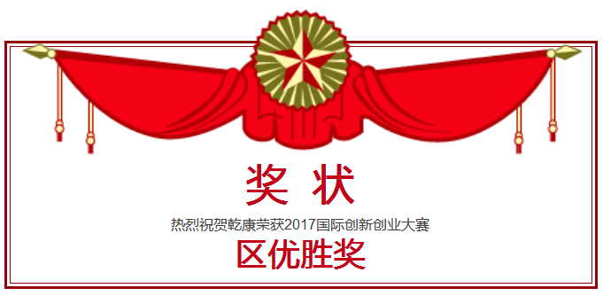
International Innovation Entrepreneurship Competition by the Ministry of Science and Technology Torch Center, Municipal Science and Technology Commission, the Municipal Organization Department, the City Board of Education and other guidance by the Shanghai Science and Technology Venture Center contractors. Designed to guide the community to support innovation and entrepreneurship, promote innovation and entrepreneurship culture.
Qiankang-"Bank unified wind control model management platform" in the competition won the district level awards, and will enter the municipal competitions competitions.
Dry and healthy president Zhou Bin, deputy general Tian Bin
With the vigorous development of Internet finance, banks face unprecedented competitive pressures, many banks began to explore the business transformation of Internet banking.
In the Internet business wind control, due to the market for Internet financial anti-fraud, personal credit evaluation of a lot of products, but they can only solve a certain aspect of business wind control problems, resulting in banks can only through the deployment of multiple sets of wind control system To solve the problem of business wind control, the wind control model embedded in a number of wind control system, to the banking business system, docking, rapid model reuse and model management and maintenance work to bring a lot of problems.
Dry Kang - "Bank risk control model unified management platform" targeted under restrictive conditions to solve the banking industry supervision, implemented by means of the Internet and multi-dimensional data model to quantify risk control and other technology to solve business problems can be solved quickly and efficiently in practice faced Of the many models deployed applications and integration with the business system inefficient problem.

Dry and healthy president Zhou Bin, general manager of dry and dry clothing Sun Hongwei
Technical Characteristics of Bank Unified Wind Control Model Management Platform
1, distributed architecture, with horizontal scalability "safe, autonomous, controllable"
2, the business routing flexible configuration
3, product implementation cycle is short, low maintenance costs
4, to support a variety of dynamic deployment model
5, to support a variety of business fast access
6, high availability, 7 * 24 running
7, support model multi-version parallel
Unification of Wind Control Model Management Platform in Banks
1, the development of model standards technical specifications
2, to provide a standard programming framework
3, the model "hot swap" technology
4, support for rapid integration
5, to support the mainstream bank database, the side of the operating system without requirements
6, the use of distributed architecture, support for horizontal expansion and load balancing cluster deployment
Winning, not the end
But in order to better forward
I wish to achieve better results
Age and race, qiankang ahead
Date of publication：2017-05-24
In order to help employees understand the development of the company, business scope, technical features and operating norms; in order to enhance staff cohesion, sense of pride and a sense of belonging; in order to improve the staff business ability, improve satisfaction.
In May 19, 2017, the implementation period of two days of financial consulting department qiankang internal training headquarters officially commenced in Shanghai. 8 lecturers from the president's office, qiankang software platform, implementation consulting department, market department and other departments attended the training participants, a total of more than 40 people.
Training site
The initial meeting, qiankang vice president Liu Xuejun to the company to pay people to give thanks, qiankang company is growing, the company is also facing transformation, Liu Xuejun proposed for employees: professional, efficient, dedication, cooperation, integrity and passion 6 requirements. This is the enterprise culture qiankang.
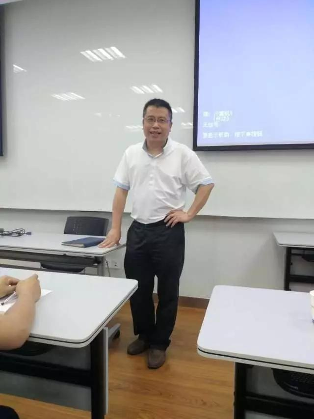
Qiankang vice president Liu Xuejun
Qiankang deputy chief Tan Xiaoyang on how to carry out the credit card business and put forward their own insights. Tan Chang said: "the credit card market is securitization, to the bank, to the end customer consumption transformation.".
He said: the future development of credit card business faster and more technology and network, to use the financial technology view of credit card business, credit, risk control mode to upgrade, and truly help the bank to solve the problem, improve satisfaction.
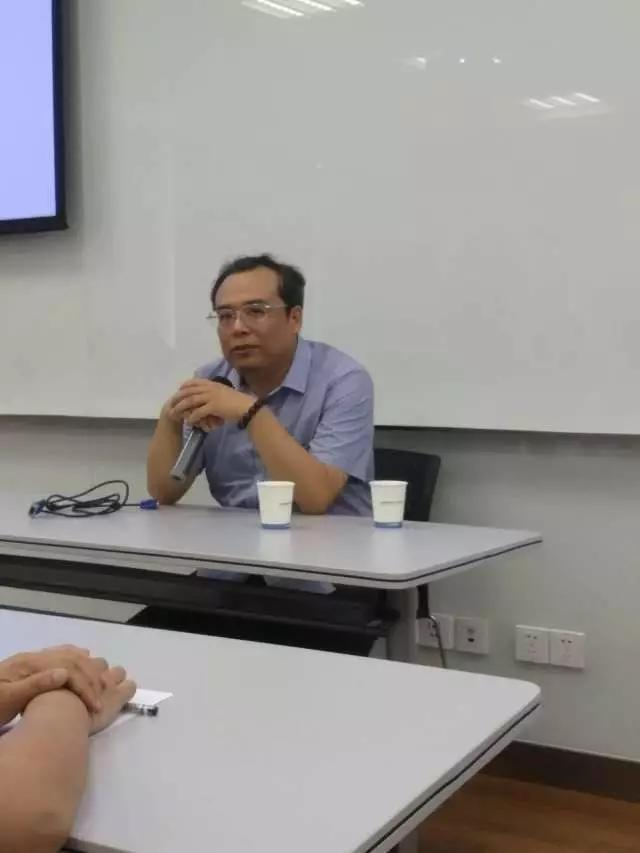
Qiankang deputy chief Tan Xiaoyang
The director of the marketing department where Xianyu briefly introduces the development process of the qiankang focuses on the main business, the direction of the future development of the company.
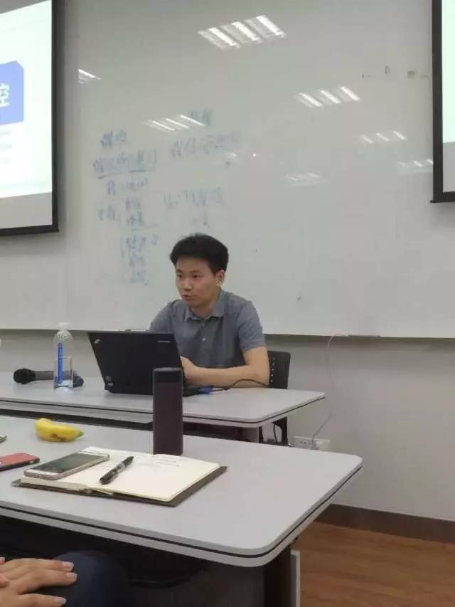
Marketing Director He Xianyu
Ma Yinghan, the head of the software platform, has carried out a thorough discussion on the scale of China's consumer finance, the characteristics of consumer finance, the banking and consumer banking operations, and the advantages of the Joint Lending of suning.
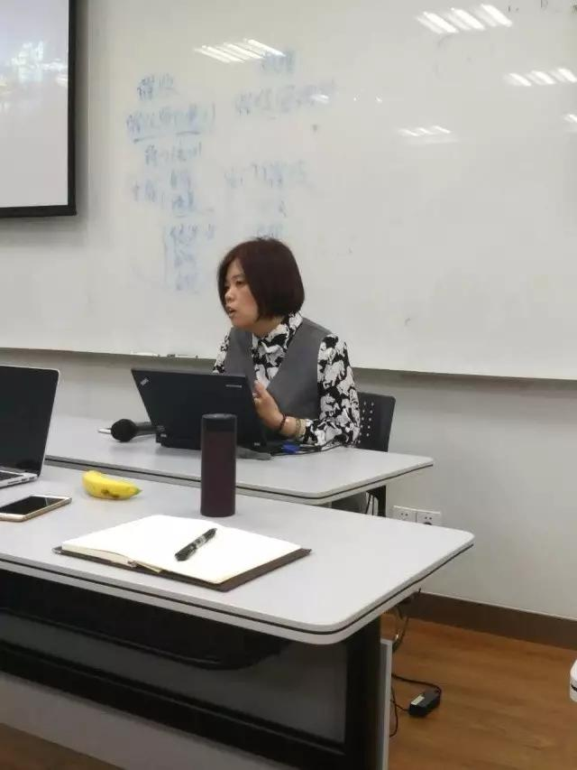
Software Platform Department boss Ma Yinghan
Software department deputy general manager Tian Bin pointed out: today's era to accelerate technology progress, the total wealth increased, continued to improve productivity, technology is changing the future, we need for financial nature have a deep understanding.
He said: as the integration of the value chain, qiankang advantage lies in the integration of financial and technology. The next station is the world of artificial intelligence, the future development trend is also qiankang hold technology, help banks to solve the pain points, and the times ahead.
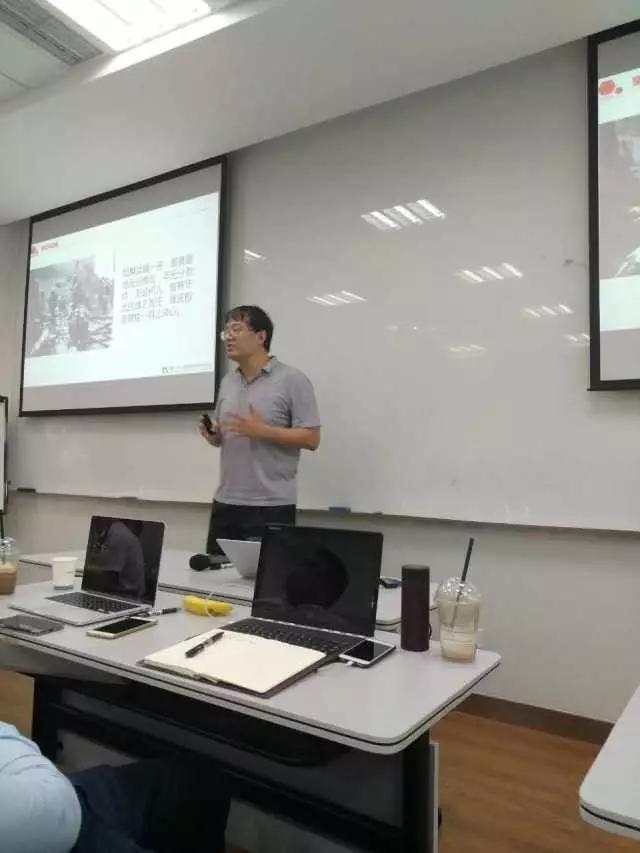
Software platform deputy general manager Tian Bin
The implementation of Project Consulting Consultant Duan Yixiang "project definition, project the birth of reason", "project types and characteristics" and "stakeholders introduction", "management system and related knowledge points" were shared with everyone. Impassioned about the scene, a round of applause.
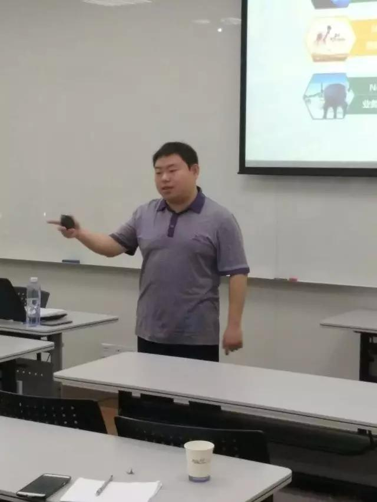
Consultant & Project Consultant Duan Yixiang
The implementation of the project department deputy general manager Liu Yongan around the project "value" and "cooperation demands" and "stakeholders" maintenance ", the project team and assist the division of labor" and "emergency" and everyone started to interact. How to better reflect the qiankang value in the project, how to enhance the satisfaction of other issues, reviews and effective answer.
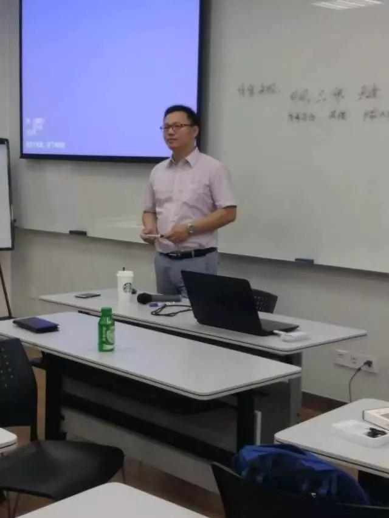
Liu Yongan, deputy general manager of Consulting & Implementation Department
Consulting department boss Li Li made the final summary. She proposed: consulting business should be combined with financial technology, the use of project management platform, standardize standards of conduct, control project progress, improve customer satisfaction.
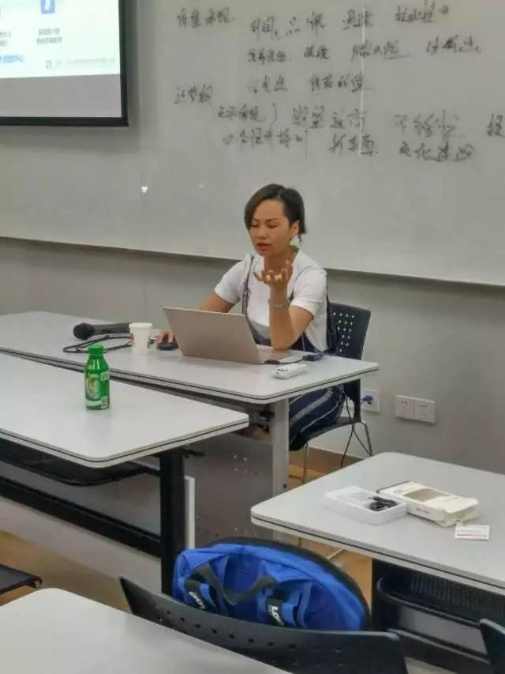
Consulting department boss Li Li
Qiankang embrace Tencent, to achieve multi-win!
Date of publication：2017-04-25
Recently, dry and financial chief Zhou Zhou, Jiangsu, a farmer firm, by Tencent to pay the basic platform and financial application line deputy general manager Zheng Haojian invited to Tencent company had a visit to negotiate.
Tencent company was established in 1998 in Shenzhen, is currently China's leading provider of integrated Internet services. Tencent's payment infrastructure platform and financial application line was established in 2015, mainly carrying Tencent's Internet financial business, Tencent is the development of financial characteristics.
Under the leadership of General Manager Zheng Haojiao, Zhou Hong, President of Kangkang and a farmer in Jiangsu, visited Tencent Building, learned about Tencent's development process, the latest strategic planning, Tencent's talent concept and product characteristics. Vivid and interesting to explain, we have a deeper understanding of Tencent enterprises.
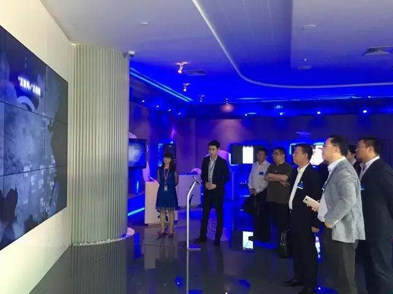
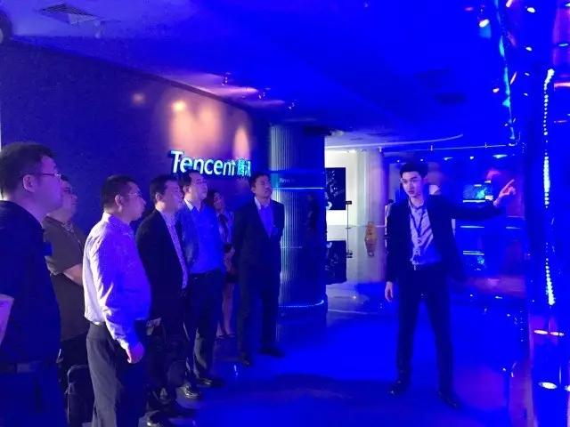
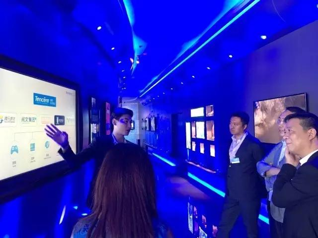
After a brief break, the three parties around the "joint lending, to achieve win-win" to carry out project cooperation talks. During the period, the risk assessment ability of dry and healthy was well received by the participants. After several rounds of brainstorming, the three parties reached a preliminary cooperation intention.
The talks, Kang Kang fully demonstrated in the field of financial wind control unique advantages. As a financial technology enterprise, Gan Kang focused on personal credit risk control, Internet banking operations, personal credit business consulting operations and other business.
Tencent Zheng said, is very optimistic about the future development prospects of dry and healthy, hope in the Tencent credit, virtual credit cards, small loans and other aspects of the network can have a deeper level of deep cooperation.
Deposit promotion! Shandong a farm business marketing training perfect ending!
Date of publication：2017-04-14
April 8, 2017, dry and dry Shandong, a farm business trip to carry out the "2017 second session of the client manager marketing training conference." The training mainly includes: marketing strategy, marketing team management, insurance business introduction and marketing, financial products sales precautions, sweep code to pay marketing skills, channel marketing skills and so on.
Training site
Attend the training activities are: in charge of the line of vice president; general manager of the retail business; the jurisdiction of the line and the branch president, vice president; customer manager at all levels.
Invited Gan Kang chapter of the article always a one-day marketing ability training.

Zhang Qiwen on-site training

Zhang Qiwen on-site training
Through on-site analysis and explanation, combined with the technical characteristics of various departments, the parties have said that the effect is significant, learn something.

Training site

Training site
Economic Daily said: bank restructuring should take the initiative to embrace financial technology
Date of publication：2017-04-13
Take the initiative to embrace financial technology is the trend,Traditional commercial banks to achieve the transformation of breakthrough development, it is necessary to explore the use of new technologies and innovative service and service channels to accelerate the expansion of emerging business, to achieve synergistic development of service channels and resource integration, but also with financial technology companies to build a win-win relationship , To achieve technology sharing and platform sharing, reduce duplication of waste, lay the foundation for further transformation and development.
Recently, listed banks have released 2016 annual operating results. In the real economic slowdown in the situation, most of the banks to maintain a steady growth trend, operating performance steadily. But in this context, the bank's various types of business development on the overall income growth has shown a different trend, which spread income gradually decreased,Non-interest income contributes steadily.
In recent years, with the advancement of interest rate market, the bank net interest income continued to decline,And pull the overall profit growth of the banking industry more power from the intermediary business income.The Experienced the rapid growth in recent years, part of the bank's intermediary business accounted for more than three percent, which is equivalent to the general level of international financial institutions. Data show that by the end of 2016, the Bank achieved non-interest income of 177.6 billion yuan, an increase of 21.91%, accounting for 36.72%, an increase of 6.01 percentage points.

Refinement, the development of various banks in the middle of the business process there are some delicate changes, some of which continue to shrink the traditional business. To promote the banking industry to further enhance the intermediary business income, it is the rapid growth of emerging intermediary business, including asset custody, mergers and acquisitions and other business development momentum of rapid development.

At the same time,The rise of financial technology companies is becoming more and more important to traditional financial institutions.PricewaterhouseCoopers recently released the annual "Global Financial Technology Report" shows that the next three to five years, emerging financial technology companies will take away 24% of large financial institutions revenue. In view of this, the bank transformation into a new stage, to maintain profit growth must change business ideas. research shows,2016 global about 50% of the financial technology investment flows to China.China Banking Regulatory Commission Chairman Guo Shuqing recently delivered a speech that the Bank 3.0 era has come, to use financial technology, relying on large data, cloud computing, block chain, artificial intelligence and other new technologies, innovative service methods and processes, integration of traditional service resources, The advantages of the entire banking industry to enhance the efficiency of resource allocation to a more advanced, more flexible and more efficient response to customer needs and social needs.

Take the initiative to embrace financial technology is the trend.Traditional commercial banks to achieve the transformation of breakthrough development, it is necessary to explore the use of new technologies and innovative service and service channels to accelerate the expansion of emerging business, to achieve synergistic development of service channels and resource integration. Simultaneously,But also and financial technology companies to build a win-win cooperation and good relations,To achieve technology sharing and platform sharing, reduce duplication of waste, lay the foundation for further transformation and development. It is noteworthy that, while innovation, should also effectively guard against risks, and strive to play the Internet financial and financial science and technology should have the function.
Women have aspirations, industry female pioneers
Date of publication：2017-04-13

April 12, 2017, the annual "Shanghai software industry industry model, service star" selection work came to an end. After the first instance and expert review, dry and healthy (Shanghai) Financial Information Services Co., Ltd. Software Development Department Ma Yinghan stand out, won the 2016 "Shanghai software industry model" title. The list of winners is public on the same day.

Awards at the conference site
From the original accountant registrar to the boss of today's dry and healthy software platform, she has always focused on the promotion of her own business technology, as a combat in the front line of outstanding workers, she used professional technical knowledge, standardized service , Good communication and coordination, the company colleagues and the client side of the full recognition and praise.

Awards at the conference site
As a core member of the team, Ma Yinghan clear customer needs, analysis of project technology positioning, data analysis as the guide, led the team R & D and on-line operation of the Kangkang Express platform, dry and healthy platform, Help banks solve the problem of large data acquisition, customer acquisition, credit assessment, process control, credit business life cycle risk control and so on.
Ma Yinghan won the award

Certificate
Dry and healthy (Shanghai) Financial Information Services Co., Ltd. also pay great attention to the training of employees. As a financial company, focusing on the operation and management of personal credit business and risk control, with strong professional strength, rich experience in the project and strong scientific and technological support, the formation of efficient personal credit business wind control operation system, with accurate data Mining capacity and strong scene modeling strength.
Gan Kang is a strategic partner of the Agricultural Bank of China Alliance, MasterCard Asia-Pacific strategic partner, a large-scale consumer electronics business strategic partner.
Successful completion of district - level project application reply
Date of publication：2017-03-06
March 3, 2017, dry and healthy on the "Internet financial products, wind control and credit assessment system project application" through layers of approval, in Xuhui District Administration Building project review reply. Company project leader - Ma Yinghan and Liu Xuejun, Xiong Jun participated in the assessment meeting.
Project reply scene
Based on the extensive integration of more than ten large data companies and credit information, this project is based on the top wind control technology of credit life cycle management, which is a regional commercial bank, consumer finance, electricity finance, P2P, Small loans and other institutions to provide large data-driven credit control process management and decision-making services to help financial institutions to tap the vertical segment of the customer market, the application of quantitative means of wind control innovative financial products.

Confirm the confirmation before the confirmation of the discussion
He has a wealth of professional experience in providing professional consulting services to financial institutions such as regional commercial banks, providing small micro credit / credit card business consulting, wind control system construction, direct selling bank, etc. for nearly 50 bank customers. Service, including a rural firm in Jiangsu Province, "Rongcheng pass" project, Fujian Province, a rural bank "flexible gold" project, Shanxi Province, a subsidiary of a small loan project, the cumulative assessment of 100 million through the wind control assessment, training 90 People under the wind control expert team.

Project leader to preach the contents of the project

The respondent responded to the project
Another small micro-loan project officially launched
Date of publication：2017-03-06
March 2, 2017, Hunan Agricultural Bank of China small micro-loan project was officially launched.
The project will start the scene
At the start of the project, Wang Zhijun, the head of the bank, made an important speech on the project background, project requirements and development prospects of the small micro-loan, and made earnest expectations for the small micro-loaners. Wang said: in the small micro-loan gap in the context of a huge era, and dry and financial cooperation, will be able to achieve win-win cooperation, create a better future situation.

Wang delivered a speech
Subsequently, the company vice president Liu Xuejun from the industry trends, career planning and how to do a good small micro-credit account manager to share, to encourage everyone to seize the opportunity to learn, become a good financial officer.

Many people involved
Mr. Gan Yong, deputy general manager of the operation and management of the company conducted a team building, and on the curriculum, training programs and content, disciplinary requirements, such as publicity. Small micro loan project training began!

Attendees are seriously focused
Stand up and dry together! Dry and successful completion of the original new power project roadshow
Date of publication：2017-03-14
March 8, 2017, dry and healthy completion of Caohejing Development Zone, the original new power of March project roadshow. The project is sponsored by Caohejing Xinxing Technology Development Zone Science and Technology Venture Center and Shanghai Venture Capital Industry Association. The participants are some outstanding enterprises and investors.

Wang Zhuren, the industry association delivered a speech
Zhou always brief on the status of dry health: the current major customers for more than 30 enterprises with a certain size of the assets of the city, the City Commercial Bank, of which three for the Shanghai and Shenzhen listed companies; total assets of over 300 billion unlisted banks accounted for 1/3。
The total assets of bank customers are more than 10 trillion yuan.
And cooperation with the cumulative credit line more than10 billion yuan.
Zhou introduced the dry business
To cope with the difficulties and needs of the industry, dry and Kang also have unique solutions: / credit card business consulting, wind control system construction, direct marketing and other services, including Jiangsu Province, a rural firm "Rongcheng" project, Fujian Province, a commercial bank " Flexible gold "project, a small club in Shanxi Province, a small loan project, the cumulative assessment of 100 million through the wind control assessment, training 90 people under the wind control expert team.
1, small micro-loan operation
- Complete system of micro - credit business system
- High-quality business team
- Suitable for China 's national conditions to upgrade IPC micro - loan technology
2, credit card operation
- Innovative Credit Card Product Design
- Complete credit card business system
- Customer Segmentation Technology Incorporated into IPC Micro - loan Theory
- With more than 3 years experience in the use of multiple projects
- Followed by the development of Internet banking credit card business value - added services
3, financial technology support
- To meet the agricultural firms on the demand for financial technology
- Gan Kang data from a wide range of credit assessment capabilities
- Fast letter integrated credit data, providing off, anti-fraud, customer value assessment, customer credit assessment
- Fast loan integration Personal credit business integrated management platform, full business process management, support multi-agency, multi-product and scene market
- Mobile application, to achieve mobile office mobile operations

Zhou total project publicity
Dry and healthy business and development prospects to attract a large number of investors concerned about the Q & A session, the investors enthusiastically asked the scene warm atmosphere.

Investors asked Zhou

Zhou asked the investor to ask

Roadshow project site
Talking about Direct Banking Business
Date of publication：2017-03-14
Direct banking is a microcosm of traditional banks embracing the Internet. In the current trend of the combination of the Internet and finance has become, the financial institutions how to build a direct bank operating model? What challenges will face? We are on these issues, I am invited to direct the Secretary for direct marketing operations, senior vice president of Liu Wenxin dialogue direct marketing development.

Division I is responsible for direct sales of bank operations senior vice president Liu Wenxin
Direct marketing bank is the Internet era came into being a new type of bank operation mode, is the Internet financial technology (FINTECH) environment under a new financial products. This business model, the bank does not rely on business outlets, do not issue physical bank cards, customers mainly through the Internet channels to obtain banking products and services, because there is no network operating costs and management costs, direct marketing banks can provide customers with more competitive deposit Loan prices and lower rates. Product standardization, more convenient operation process, by reducing operating costs feedback customers is the core value of direct marketing banks.
Since 2014, the rapid development of direct marketing banks, has reached more than 60. However, the development of direct marketing banks are generally faced with two problems, first of all, direct selling bank homogenization of the phenomenon is more serious, and truly non-replicable and unique direct sales of rare banks. Second, direct marketing banks and traditional banks of mobile banking, online banking between the definition of fuzzy, there is no obvious distinction, but did not highlight its due Internet innovation characteristics. After recent years of competition, most of the direct marketing banks are not a climate, both in product design and marketing and promotion of outstanding mutual gold enterprises there is no small gap, just rely on the bank's credit endorsement and mutual gold industry struggling to compete , Sustained and effective access to new customer capacity is generally inadequate. Since the "foreign war lay", "foreign war is not strong", so most of the direct marketing banks have turned to the civil war, Fortunately, the civil war finally expert, grab the customer is not difficult, through the line of customer conversion is also considered alive, but this And direct sales of banks set up at the beginning through the Internet and the mutual gold industry competition to obtain new customers far from the idea. So how to get out of such a dilemma so that direct marketing banks as soon as possible to explore a line of Internet characteristics of the development of direct marketing banks, Liu Wenxin on the following aspects to talk about personal views:
1, drainage was received
As the current Internet industry, the channel was mixed with the channel, there are a large number of "Wool Party", or even by means of technical means to simulate the false "customers", the prevalence of low conversion rate and high cost of the problem, the traditional mutual gold industry drainage Channels in recent years, the practice of direct marketing banks, most do not meet the direct selection of bank Internet drainage standards. Through the exploration of some banks, cooperation with large-scale electric business platform is now more effective drainage method, after these large-scale electric business platform for large data analysis, can be more accurate for banks to provide direct marketing and banking products in line with the characteristics of customers. In order to enhance the customer experience, we can try to provide the basic information of the target customers to the bank by the electric business platform. The bank will handle the system through the system and then push the marketing information to the customers. , Will greatly simplify the process of new customers registered investment, thereby enhancing the customer's sense of experience and conversion rate, and through the WeChat friends circle advertising in accordance with the target group of precision push is also an effective way to get customers.
2, content marketing
At present, most of the direct marketing banks from the media (micro-public, microblogging, knowledge and APP, etc.) mostly in the form of soft text to promote their own products, not to stimulate the stock customers to read and forward the enthusiasm, which is mainly failed from Customer's point of view to consider their needs, since the vigorous development of the media is mainly based on the sense of brush (share and show off) the psychological, a high-quality article or meet people to share the psychological picture is often in the circle of friends quickly spread The Direct marketing of the bank from the media in order to get a quick recognition in its content construction as a key work to be more attention and input, only good content is worthy of the existing fans to spread, and thus play the powder and powder The role of direct marketing banks should learn from those microblogging large V and WeChat public number of large practice.
3, activities marketing
How to make these customers an effective investor will be able to stimulate their activity and attention through a variety of activities, and to increase their sense of experience through ongoing activities is the focus of the activities of marketing, in the activities of marketing In the process, to be more combined with the scene marketing, with some foreign companies to cooperate, multi-dimensional to provide preferential services to customers. Use word of mouth marketing or social communication to improve brand awareness.
4, product marketing
Direct marketing of the product in the design should be different from the Bank line of financial products in the brand and product promotion to customers continue to implant convenient and relatively high income concept. Low cost "and" convenience "are two important directions to promote direct marketing before, and the next trend should be" customization "and" specialization. "Delivering personalization for long tail customers or emerging customers in low cost , Customization and high value-added services, is the focus of future direct marketing banks, and this service only rely on artificial intelligence and large data to solve this direct marketing banks to strengthen cooperation with large data analysis companies and financial technology companies, To further enhance the connotation of financial technology.

Inventory financial circle pressure list, you shot it?
Date of publication：2017-03-17
Why are financial people so much pressure?
There is a long time in the financial circle of the nightmare "the magicroundabout (magic ring road)": 7 o'clock in the morning, the taxi driver in the bank downstairs waiting for you, take you home, waiting for you to go up a bath, then Bring you back to the company. This is the life of the financial circle portrayal.
Chris Roebuck, a visiting scholar at Cass Business School, has said that young people are increasingly becoming a problem in the City of London. "Because of personal ambitions or job market reasons, people are eager to seize the job opportunities, the pressure from the resulting.
The financial circle of work pressure list
US media have made a survey, the Wall Street's work in accordance with the pressure to do a division ranking.
1，InvestmentBanker:As the pressure of the largest Wall Street work, investment banks in the pressure indicators are among the top three. The main pressure faced by investment bankers comes from the difficulty and the amount of work, especially managers and analysts.

2，Trader:Most traders do not have to work overtime like an investment banker, but they may have a more serious and direct pressure. Their pressure is real-time instantaneous outbreak.
3，Risk management & compliance:A few years ago, this position will not row so front. Risk and compliance income is not as high as traders and investment firms, but their stress is not small at all. Risks and compliance are only the third reason is that work is guaranteed, at present, the lack of sufficient professionals to fill the vacancies.

4，Wealthmanager/financialadvisor：Wealth managers and financial advisors face a specific stress: dismissal is commonplace.
5，Institutionalsales：Any sales work is stressful. Coupled with the work of the instability and lower wages, institutional sales is a torture.
6，Managementconsulting：The work in the final analysis is to add endless classes, endless projects and endless experience. Consultants are always in the "start" state.
7，Private equity：To work in private placement, you must be very smart, very hardworking and versatile.
8，Industrial coverage/researchanalyst：Rich, passionate, explosive fund managers and traders rely on research analysts to work. And analysts tend to be the object of being accused. Especially at the buyer.
9，Fundmanager：Fund managers are also a highly tense job, but they are qualified, do not have to do heavy work, and often more money, which may allow them to take a little breath.
10，Technology：The pressure of technical staff is not too big, and occasionally have the boss complained that you spend less money. But there is no pressure to make money so much.

Financial elite rely on decompression?
1, slow down the work speed. If you are overwhelmed by the intense work of the pressure, it is best to put the work immediately, slow down, easy to take a break, you may do better.
2, a reasonable schedule to schedule their own strict implementation of the restraint system, so that life, learning, work can be carried out regularly.
3, pay attention to cultivate a good attitude to strengthen psychological counseling, develop their own psychological analysis of the habit. You can consider making friends with your psychiatrist, with a view to getting their help.
4, to ensure adequate sleep Do not violate the laws of nature, so that the body of the various functions of a good rest.
5, the correct evaluation of their own forever to maintain a normal heart, do not make life difficult with their own, the goal set high unattainable, everything needs to do, at any time to adjust the target may not be weak behavior.
Hunan, a small firm in a small agricultural loan center debate contest champion freshly baked!
Date of publication：2017-03-27
March 24, 2017, by the dry and financial and Hunan, a farmer firm co-organized a small micro-credit center debate finals ended successfully!
The event focused on training the customer manager's logical thinking ability, language skills, organizational skills and teamwork ability, and achieved new breakthroughs.
Match to take the preliminary tournament. The first round of the staff from the micro-credit account manager, divided into eight groups, two groups of duel, a total of four debates, debate to take the principle of free debate, after a heated debate, produced a total of eight best debater, 2 group into the final finals.

Final Debate scene
The final speech by the chairman first, to introduce the relevant background information; players with their own debates to introduce themselves, a brief introduction to the game process and rules, the debate began.

Made a statement

Anti-side two debate defense

Free debate

Sum up the speech
After the game also increased the audience interaction, the audience can ask questions to the pros and cons, by the two sides selected players to answer. The link in the official after the end of the game, increase the game ornamental, does not affect the game results.

Ask the audience

- Finals -
Winning team
Let the strategy go dry and dry in action
(Dry and healthy training classes started! Enterprise transformation urgent)
Date of publication：2017-04-06
On March 31, 2017, at 1:00 pm, the two-day training course of dry and healthy (Shanghai) Financial Information Service Co., Ltd. (hereinafter referred to as dry and healthy financial) was officially opened at Shanggan Finance Shanghai Headquarters. Department, the Department of Health and Garment, the Ministry of Consulting and other departments, including Shaoxing Finance CEO Zhou Bin, including more than 20 students to participate in this training.
Regularly organized group management training is the traditional virtues that Mangkang has retained since, aiming at combing the "action goal" of the whole enterprise through training, and discussing the outstanding problems existing in the enterprise at present and making feasible Solution, the business floor, increase the number of contracts.
Financial technology to make finance more simple
In order to improve the "gold content" of this training, the boss of the department has also invited the famous "business senior doctor" Pan teacher, "how to cross the gap between strategy and implementation" in-depth discussion of the theme.
"Shocking the status quo", "analysis of corporate transformation", "how to land", "corporate image analysis", "the use of digital management tools to implement strategic transformation" ... ... Pan teacher through the five modules from the inevitable transformation of business, Corporate image in-depth profile, and concise and put forward the feasibility of the program.
At the training meeting, Mr. Pan relentlessly directed the current problems of dry and healthy finance, she said, different communication style team members in the same thing on the understanding of differences, resulting in communication costs, team communication consistency is low, The company's overall operational capacity to be strengthened. "The core management needs to do the role of conversion, in order to improve the overall management support." She stressed that.
As for the company's core values, consulting the implementation of the Department of Zhang Xiaona also concluded: "understand the financial, understand science and technology, product, platform, as our new slogan summed up the 'dry and healthy, so financial simpler'." Applause one.
Focus on the implementation of OKR company
Up to 4 hours and 30 minutes after the wonderful training of teachers, the dry and financial chief Zhou Bin on the core functions of the three departments once again combed: "The software development department should play is the production of the engine function, but the products and Is not the final combination of products, only important accessories; consulting implementation department is focused on processing portfolio, through the B-side users to provide products, services, good C-side users; and dry health service sector responsibilities, but only by human, the key is to create Asset capacity for Internet banking customers to provide dry and healthy research and development of financial products.
In addition, in order to help the company better focus on strategic objectives, better focus on the allocation of resources, so that the team up and down with the desire, dry health from the second quarter of 2017 officially full implementation OKR (ie target and key results ), Will be quarterly for the cycle, prior to determine the quarterly goals and key results, to check the frequency of every two weeks, OKR Review.
Let the strategy real land, dry and healthy in action, are you ready?


Qiankang make financial simpler!
Date of publication：2017-04-14
Why is this slogan? In the current society, the general public for the financial feel quite complex, more difficult to grasp the financial process, which requires innovation, is to improve efficiency, which is one thing. You make a taxi more simple, you are drops. You make shopping more simple, you are Taobao. This requires a good slogan for branding. What is that a good slogan? There are a lot of familiar Slogan word of mouth, but if asked which brand is the Slogan, many consumers often can not answer, not to talk about, through Slogan spread corporate brand connotation. "Diamond forever, a permanent pass" was regarded as the classic advertising industry, but how many users know which brand is the Slogan it? Financial brand, the brand name included in the Slogan among the positive cases such as: "safe insurance: buy insurance, buy peace", "point of melting network: mobile management, on the point of melting", which will be more favorable brand communication. Based on the above analysis, I put forward the "dry and healthy, so that the financial more simple!" The slogan, on the one hand reflects the dry and healthy brand, on the other hand, reflects the purpose of the service.
Avenue to Jane.Jane, meaning enrich the P Plus advanced concept in one; both things with high efficiency and efficient operation of the case; also package integrity Houde service-oriented meaning. Jane, that is dry and healthy to pursue the core concept.
Tick its complex in the dry and healthy, to its simple customers.All along, we have pursued:“Qiankang make financial simpler!”The core concept of sincere service in the regional commercial banks and other financial institutions, to provide credit wind control consulting operations. Build OTO business model service platform.
Dry and healthy is not simple, only financial simpler! As a fintech company, gathered a large number of bank wind control data experts, but also with the Internet data, based on large data platform, combined with high-tech technology, strict control for the bank risk.Company high-level think-tank gathered, the existing staff of 145 people, of which more than 98 percent of higher education staff, Dr. 6 people. The company set up three years has been 17 software copyright, for nearly 50 bank customers to provide a small micro-credit, credit card consulting and wind control system construction services. Accumulated 100 yuan through the wind control assessment credit, training more than 90 people under the wind control expert team.
Advanced concept, is the core of the service customers. Jun want to be successful in the heart.An advanced concept is the core of corporate culture, only to maintain the concept of advanced nature to ensure the correctness of the strategic direction of an enterprise. The company has advanced four-dimensional wind control model, based on the current, look at the overall situation for the 21st century China's financial risk characteristics of a set of unique risk control solutions, these advanced concepts to ensure that the company's customer service quality.
Simple and efficient, is the pursuit of health services customers. Time is money, time is value.In today's rapidly developing society, the customer's time is quite valuable, we need to do is through professional technology, so that customers can work efficiently, save time for customers. Companies in the customer-centric principle, all the foothold of all services are to provide customers with the most efficient and most simple solution. The company's core strategy to guide the team and technology research and development team for different customer issues given accurate professional solutions, the complex redundancy will be left to the dry and their own, convenient and efficient solution to stay customers.
Safe and reliable, is the backbone of health services customers.Recall the 2008 century financial tsunami, all people shudder. In the financial sector, risk prevention and control is definitely the last barrier. Lost the security of this security, the entire financial activities as if without a safety rope walking in the 100 meters altitude acrobatics. And Kang is the fancy of the financial in this most critical part, so it will be safe as the conduct of the conduct of the dry. So that customers can not only win the benefits and will bear the risk to a minimum.乾康在手，风险无忧。
Jane is to give up, it is harvest; true simplicity not only let us back to nature, let us comprehend inclusive; your heart is created a simple, or inclusive of the world? World unbounded, mind capacity is capacity. I believe the company will be outstanding business capabilities, advanced service concept and simple service purposes standing in the 21st century a new starting point for customers to provide more efficient and convenient, satisfied with the thoughtful, sincere service to the letter.Qiankang make financial simpler!
 QQ
QQ
Shanghai ICP for 13043724>